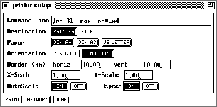

Next: Help Windows
Up: Windows of XGUI
Previous: Projection Panel
The print panel handles the Postscript output. A 2D-display can be
associated with the printer. All setup options and values of this
display will be printed. Color and encapsulated Postscript are also
supported. The output device is either a printer or a file. If the
output device is a printer, a '.ps'-file is generated and spooled in the
/tmp directory. It has a unique name starting with the prefix `snns'. The
directory must be writable. When xgui terminates normally, all SNNS
spool files are deleted.

Figure: Printer panel
The following fields can be set in the Printer Panel, which is shown
in figure  .
.
- File Name resp. Command Line:
If the output device is a file: the filename.
If the output device is a printer: the command line to start the printer.
The filename in the command line has to be '$1'.
- Destination: Selects the output device.
Toggles the above input line between File Name and Command Line.
- Paper: Selects the paper format.
- Orientation: Sets the orientation of the display on the paper.
Can be 'portrait' or 'landscape'.
- Border (mm): Sets the size of the horizontal and vertical
borders on the sheet in millimeters.
- AutoScale: Scales the network to the largest size possible
on the paper.
- Aspect: If on, scaling in X and Y direction is done uniformly.
- X-Scale: Scale factor in X direction. Valid only if AutoScale is
'OFF'.
- Y-Scale: Scale factor in Y direction. Valid only if AutoScale is
'OFF'.
 : Cancels the printing and closes the panel.
: Cancels the printing and closes the panel.
: Starts printing.
: Opens the network setup panel. This
panel allows the specification of several options to control the way
the network is printed.
The variables that can be set here include:
- x-min, y-min, x-max and y-max describe the
section to be printed.
Unit size:¯ : All units have the same size.
: The size of a unit depends on its value.
- Shape: Sets the shape of the units.
Text:¯ : The box around
text overwrites the background color and the links.
: No box around the text.
- Border: A border is drawn around the network, if set to 'ON'.
- Color: If set, the value is printed color coded.
- Fill Intens: The fill intensity for units on monochrome
printers.
- Display: Selects the display to be printed.
Next: Help Windows
Up: Windows of XGUI
Previous: Projection Panel
Niels.Mache@informatik.uni-stuttgart.de
Tue Nov 28 10:30:44 MET 1995